01 · The Problem
The site doesn't help new members or sponsors
Akaflieg is one of TUM's oldest student clubs. They build aircraft, work on aviation tech, and train future pilots. But their website was costing them on two fronts: new members couldn't figure out how to join, and sponsors couldn't quickly see what the club actually did.
The Join Us page was a wall of paragraphs with a hidden email link. The Sponsors page listed projects without any visual hierarchy, so the most impressive work blended into the rest.
-
Information overload
Joining requirements were buried in long paragraphs. New visitors didn't know what was actually required.
-
Hidden hyperlinks
The application action was a plain mailto link inside body text. Easy to miss, friction-heavy to act on.
-
Projects shown flat
The Sponsors page listed projects without hierarchy or visual cues. Nothing stood out to a quick scanner.
-
No clear "what we do"
The club's history and identity were scattered. Sponsors had to assemble the story themselves.
Reduce cognitive load on two pages — Join Us and Sponsors — so prospective members can act and sponsors can engage. Visibility and hierarchy first, decoration last.
02 · Desk Research
Understanding Akaflieg before redesigning it
Before touching the design, we mapped what the club actually is and what the client urgently needed. The initial survey from Akaflieg gave us a prioritized list of issues, which kept the scope honest.
Akaflieg is one of TUM's oldest student clubs. Members build aircraft, work with cutting-edge aviation tech, and train future pilots.
Walked through the live site as a first-time visitor, logged every dead-end, redundant block, and buried CTA.
Used Akaflieg's own survey to rank user-reported issues by urgency. Cut anything outside the Join Us and Sponsors flows.
Two pages, two user groups. Anything else was parked for a future round.
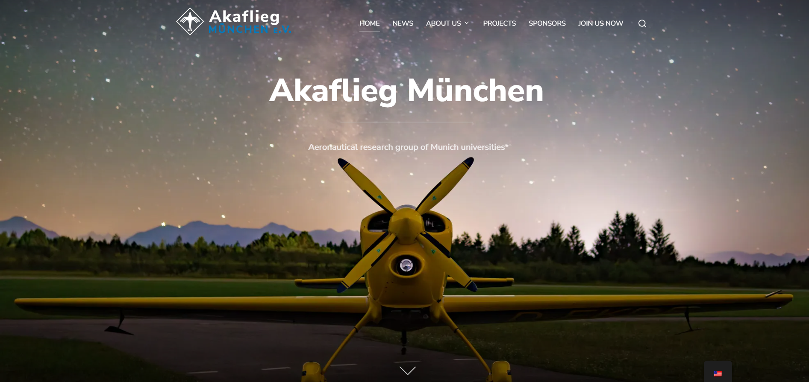
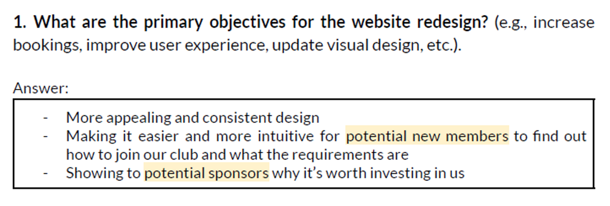
03 · Define
Two user groups, one journey each
Timeline didn't allow recruiting real interviewees, so we role-played as prospective members and sponsors and simulated the visit end-to-end. The result: two personas and one user journey for each.
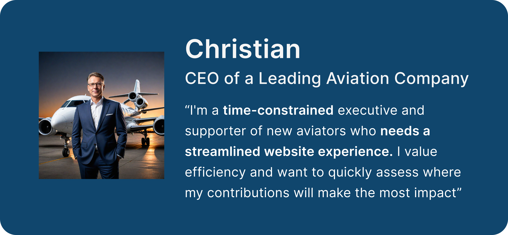
TUM student, curious about aviation, lands on the site after hearing about Akaflieg from a friend or a club fair. Wants to know: am I eligible, what does joining commit me to, and how do I actually apply.
"I'd join if I could tell in 30 seconds what the requirements are and where to click."
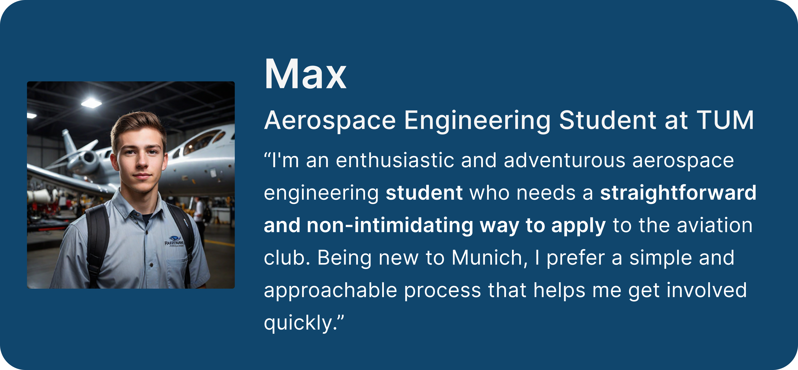
Industry contact or alum, evaluating whether to fund a student project. Has limited time. Wants the club's track record and current projects on one page, in scannable form.
"Show me what you've built. If I have to dig, I'll close the tab."
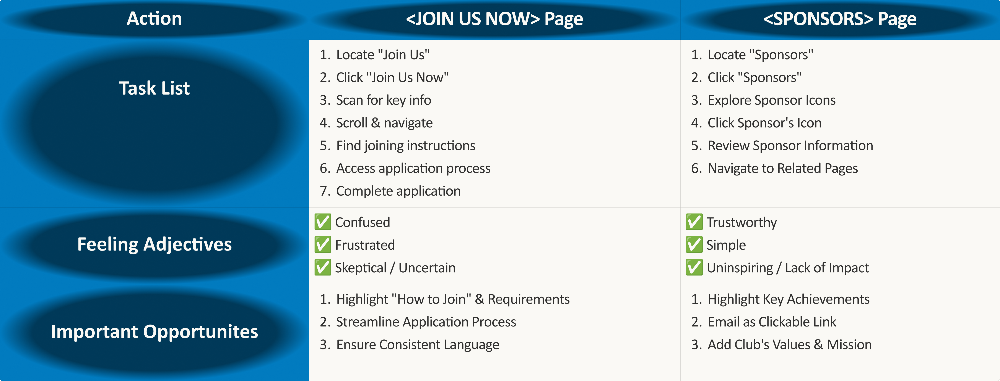
04 · Develop
Crazy 8, then wireframes
We ran a Crazy 8 sprint to unlock the obvious metaphors fast. Different formats for joining requirements, different framings for the project list. After a merge discussion, two ideas stuck: a boarding-pass card for requirements, and a flight-path layout for project history.
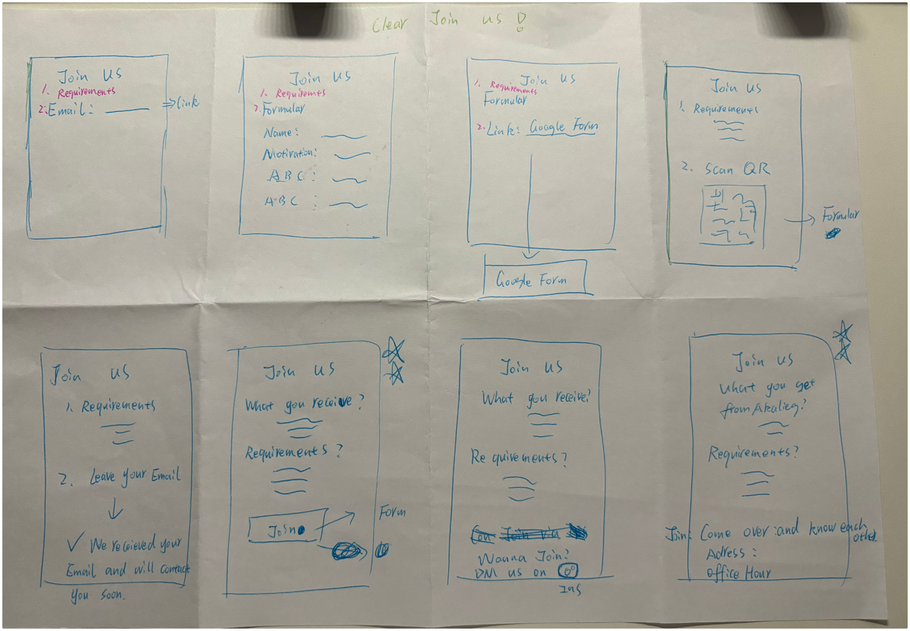
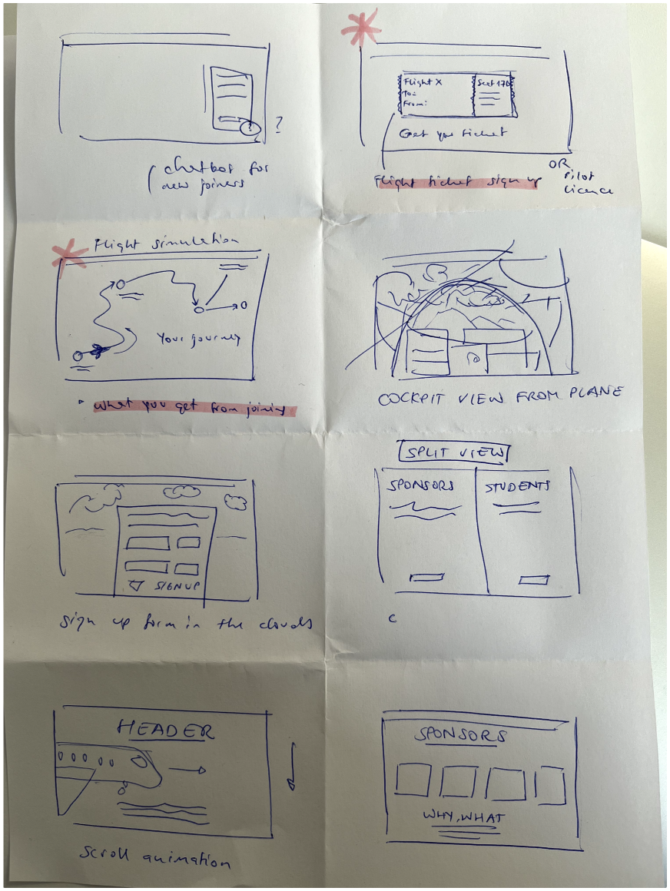
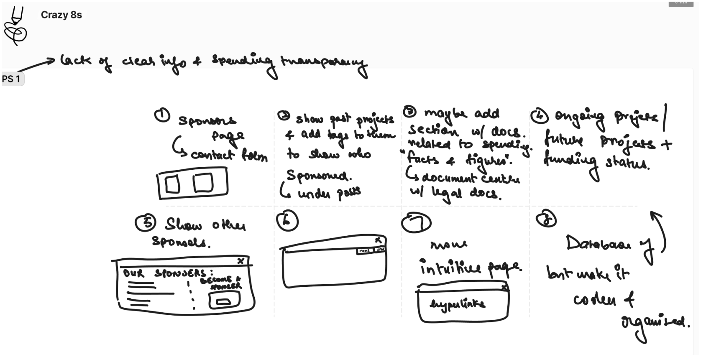

05 · Usability Studies
What testers said about the wireframe
We brought the wireframe in front of test users to see if the new structure landed. Three quotes captured the rest of the feedback.
06 · Deliver
High-fidelity design, before and after
Visual decisions stayed user-centric: each element had to earn its place. We did one extra iteration to strip purely decorative pieces. An airplane-window frame we'd added made the club page read like an airline, which wasn't the brief.

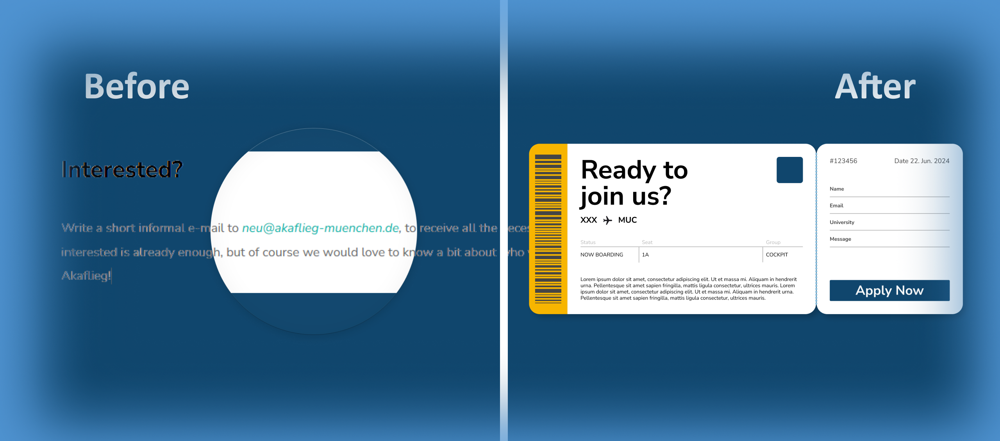
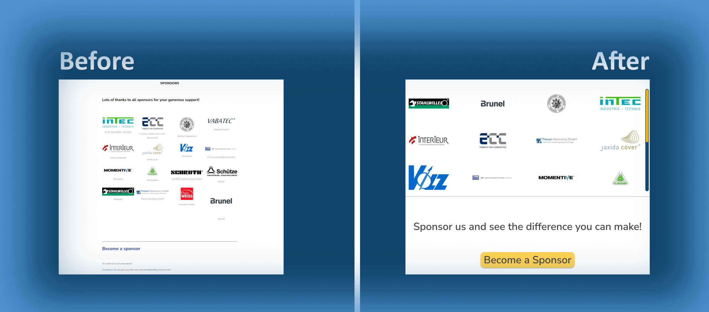
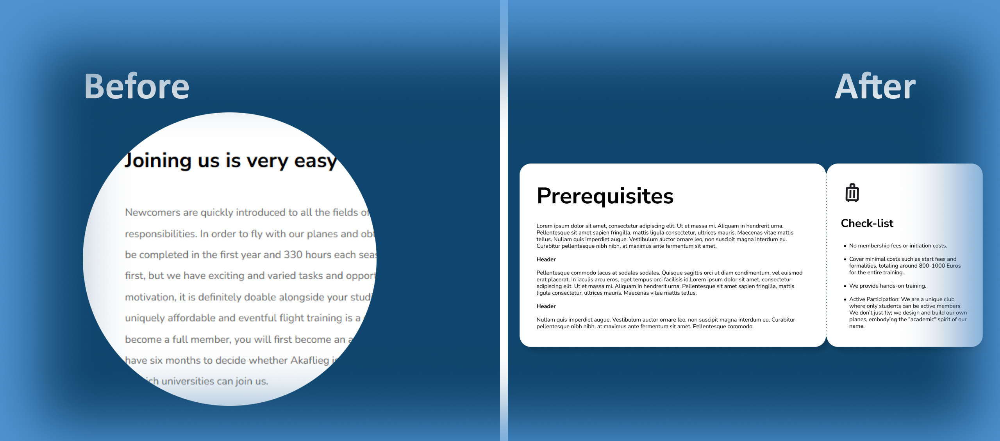
Two video walkthroughs of the final design:


07 · Reflection
What I took away
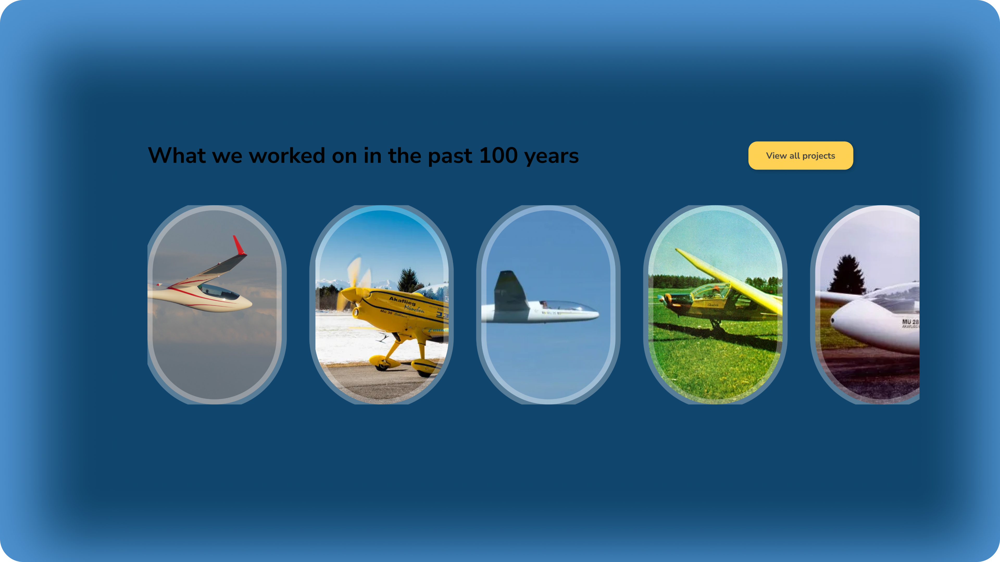
- Locking scope to two pages and two user groups. Refusing to expand kept the redesign shippable.
- Boarding-pass requirements and the flight-path narrative. Concrete metaphors did more work than any visual styling.
- The decorative-stripping pass. Removing the airplane window restored the club's identity over a generic aviation aesthetic.
- Recruit real prospective members instead of role-playing. Role-play caught structure issues, but missed the lived friction that interviews would have surfaced.
- Test the hi-fi prototype with sponsors, not just members. The two groups read the same page differently.
- Prototype the sponsor contact form end-to-end, not just the button placement. The form is where conversion actually happens.